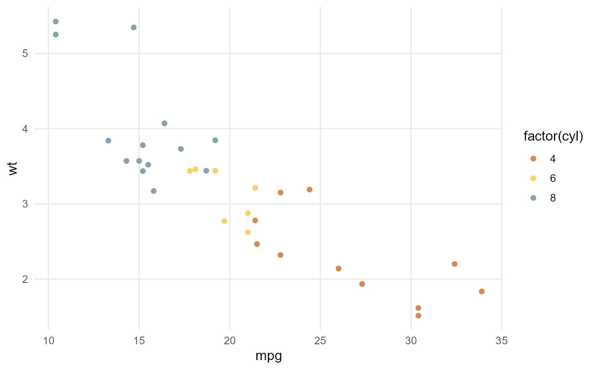

Apply WAACHS theme to ggplot2 plots
theme_waachs.RdThis function applies a custom theme to ggplot2 plots, incorporating colours to align with the project's visual identity.
Details
The function determines the operating system and selects appropriate font names for Windows or other systems. It also adjusts colour scales.
Examples
ggplot(mtcars,
aes(x = mpg, y = wt, col = factor(cyl))) +
geom_point() +
theme_waachs()
